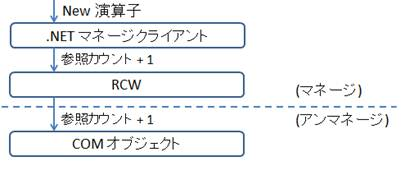
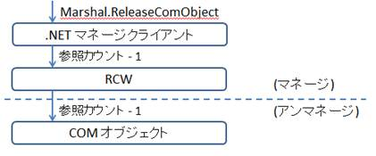
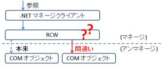
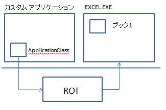
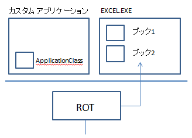

(※ 2012 年 2 月 28 日に Japan Office Developer Support Blog に公開した情報のアーカイブです。)
こんにちは、Office 開発系サポート 森 健吾 (kenmori) です。
今回の投稿では、Office オートメーションの実装コードで割り当てたオブジェクトを解放する – Part1 の続編を記載いたします。続編では、前回の投稿でベスト プラクティスとして紹介した解放処理に対して解説を実施した後、正しくオブジェクト解放を実施しない場合に生じる影響についてご紹介します。
最初に、オブジェクト解放漏れがあると、主に以下のような事象があるということは先に述べておきます。
・意図とは異なる COM オブジェクトに接続され、想定とは異なる結果を返し、アプリケーションの動作に予期せぬ影響を与えます。
・通常のメソッド実行にも関わらず COMException 等の例外が返さることがあります。
・イベント呼び出し時にフリーズすることがあります。
・Office の内部処理 (例. 終了時の処理など) に予期せぬ影響を及ぼすことがあります。
・解放漏れのオブジェクトがメモリを圧迫します。
オブジェクトの解放漏れと聞いて、誰もが最初に思いつくメモリ圧迫などのパフォーマンスへの影響以外にも実に様々な問題の要因となります。今回は、この投稿を読み終えた後、なぜそうなるかが理解できるようになることを目標とします。なお、幅広い読者層を想定して、可能な限りわかりやすい記述を心掛けます。そのため、なるべく簡略化した説明にするためにより一般的な内容だけにフォーカスし、細かな説明等は省いております。フィードバック等がありましたらお知らせください。
まずは、Part 1 で確認したベスト プラクティスのコードを分析しましょう。
1. ベスト プラクティスのコードを分析する
1) .NET における Interop COM オブジェクトの生成について
New 演算子で Excel.Application クラス等を生成すると、RCW (ランタイム呼び出し可能ラッパー) も生成され COM オブジェクトのインスタンスを管理することになります。

注意点としては、RCW は COM オブジェクトとは別の形で参照カウントをカウントしている点になります。
そのため、既存のアンマネージ COM オブジェクトに対して接続する際においては、独自の参照カウンタのみを増やし、既存オブジェクトを再利用する動作等に至ります。
タイトル : ランタイム呼び出し可能ラッパー
アドレス : http://msdn.microsoft.com/ja-jp/library/8bwh56xe.aspx
2) Marshal.ReleaseComObject メソッド呼び出しについて
Marshal.ReleaseComObject メソッドは、New 演算子で割り当てた RCW に対して、参照カウントを減算し、オブジェクトの解放処理につなげる重要な処理です。

参照カウントが 0 になると、該当の RCW や COM オブジェクト (CLR ヒープ内に存在するマネージ COM オブジェクト) は、ガベージ コレクトの対象となります。
.NET Framework は参照されている (参照カウント > 0) のオブジェクトを、解放しません。
3) Null (Nothing) 代入について
ガベージ コレクトを強制する前に、null 代入をしておくことでオブジェクトの即時解放率が高まります。
.NET Framework で用意されているデバッガ拡張の SOS 等で CLR ヒープを覗いてみると、ApplicationClass クラス等の CoClass に対しても参照がされており null 代入を実施すると、!gcroot コマンド等で確認する限り、参照が 1 つ減ることが確認できます。(SOS の使用方法は、続編でも少しだけご紹介します。)
タイトル : SOS.dll (SOS デバッガー拡張)
アドレス : http://msdn.microsoft.com/ja-jp/library/bb190764.aspx
何らかの理由によってオブジェクトに対して強い参照が残っている場合は、ガベージ コレクトの対象にならない場合がありますので、null 代入をすることで参照を解放でき、即時にオブジェクトの解放が実施されやすくする効果が期待できます。
1 | !gcroot 029244f0 |
Null 代入を実施することで、赤字の参照エントリが消えることを確認しています。
Tips
Null 代入の後、GC.Collect メソッドを実行するだけで良いように見える場合があります (例. EXCEL.EXE プロセスが終了するなど) が、これは非常に危険な方法です。
RCW への参照を残しているままの状態では、COM オブジェクト生成や参照等を繰り返した際に、例えば開発者が解放済みと考えている COM オブジェクトに対して接続しに行くなど、正しい COM オブジェクトに対する接続が実施できる保障ができなくなります。

4) GC.Collect メソッド (ガベージ コレクト) について
上述にて記載した通り、GC.Collect メソッドは参照が残っているオブジェクトを解放しません。
つまり、COM オブジェクトを扱う場合には、GC.Collect メソッド呼び出しにより、参照カウンタが 0 になった RCW や COM オブジェクトをファイナライズ キューを移動させ、ファイナライズが動作するよう促します。
以後、ファイナライザー スレッドが、他スレッドの動作を止めて、ファイナライズ キュー内に移動されたオブジェクトを解放していく動作となります。
タイトル : ガベージ コレクション
アドレス : http://msdn.microsoft.com/ja-jp/library/0xy59wtx.aspx
なお、ガベージ コレクトを呼び出すことの必要性の根拠については、後述にてご説明します。
5) GC.WaitForPendingFinalizers メソッドについて
GC.Collect メソッドはファイナライザーを実施させるよう影響します。このメソッドは、ファイナライズ対象のオブジェクトが格納されるファイナライズ キューが空になるまで待機するメソッドです。
6) 2 度目の GC.Collect メソッドについて
上記までの処理で解放されたオブジェクトが他の COM オブジェクトを参照していた場合、2 度目の GC.Collect メソッドにて、前回解放されなかった COM オブジェクトがやっとガベージ コレクトの対象になります。
この際に、2 度目の GC.Collect メソッド実行時にファイナライズ キューに移動し、ファイナライズ処理される動作となります。
参考情報
ここまでの投稿に関連した参考情報を記載します。
タイトル : .NET アプリケーションのパフォーマンスとスケーラビリティの向上 - 第 7 章 「相互運用パフォーマンスの向上」
アドレス : http://msdn.microsoft.com/ja-jp/library/ff647812.aspx
2. オブジェクト解放漏れによる影響とは
冒頭にも触れましたが、オブジェクト解放漏れによる影響は以下が考えられます。
・意図とは異なる COM オブジェクトに接続され、想定とは異なる結果を返し、アプリケーションの動作に予期せぬ影響を与えます。
・通常のメソッド実行にも関わらず COMException 等の例外が返さることがあります。
・イベント呼び出し時にフリーズすることがあります。
・Office の内部処理 (例. 終了時の処理など) に予期せぬ影響を及ぼすことがあります。
・解放漏れのオブジェクトがメモリを圧迫します。
すでに、これまでの説明でご理解いただいた方が多いかと思いますが、オブジェクト解放に問題があると解放漏れのオブジェクトがメモリを圧迫するなどパフォーマンスへの影響が発生することは想像できるかと思います。
しかし、それ以上に .NET 上で記載したクライアント クラスが COM オブジェクトへの接続処理を誤って、様々な予期せぬ動作を引き起こす結果につながる可能性があります。
これは、意図しない COM オブジェクトに対して接続されることで、対象オブジェクトの状況に応じて異なる結果を返したり、接続不可の場合はエラーを返したり、ロックされてしまって固まったりしてしまう結果にもなり得ます。また、場合によっては、Office 内部において、オブジェクトが意図しない形で残っていることなどにより、終了時の処理でダイアログが出たりする事象も確認されております。
この予測できない現象に対する問題の根本原因を特定するまでには、多くの場合、かなりの労力が必要となることが考えられます。
そのため、オブジェクト解放については、ベストプラクティスのコードを順守して実装をご検討いただければと思います。
ガベージ コレクトの強制を必要とする理由
.NET Framework では自動メモリ管理を実装しているため、オブジェクトの解放時期が予測できません。そのため、この 解放待ちのオブジェクトが、アンマネージの処理において再利用されてしまう危険性もあります。
前回の投稿 Office のプロセス インスタンス制御について でも一部ご紹介しましたが、Office アプリケーションは、オブジェクト生成等を実施した際に、ワークステーション単位で管理されているランニング オブジェクト テーブル (ROT) 等に登録していて、様々な状況下で OLE や DDE 等のテクノロジーを基盤としてオブジェクトを再利用する動作となります。

まず、上述のようなアプリケーションでブック 1 というファイルを開いている場合、上述のような構成でアプリケーションが動作することになります。
ここで、ユーザーがエクスプローラより xlsx ファイル (ブック 2) を開いたらどうなるでしょうか。

上述のようになります。つまり、.NET Framework 上でガベージ コレクト待ちで解放されていないオブジェクト (ネイティブ オブジェクトへの参照) であっても、OLE 側ではアプリケーション オブジェクトには変わりなく、プロセスはプロセスに変わりありません。したがって、既存のオブジェクトすなわちプロセス インスタンスが再利用されてしまう動作となります。
正しいオブジェクト解放をあきらめたカスタム アプリケーションが最後にとってしまう最悪のシナリオは、自分が起動したプロセスを Process.Kill メソッドで強制終了してしまうことです。しかし、上記の状況においてはブック 2 はユーザーが手動でファイルを開いている状態となりますので、プロセスの強制終了はユーザー データの損傷と直結します。
また、微妙なタイミングによって、.NET Framework 上でガベージ コレクトが実行されるタイミングと、ユーザーがファイルを開くタイミングが微妙に重なり、ユーザーがファイルを開いているのに反応しないという状況も実際にありました。
このような状況を防ぐため、ユーザーがカスタム アプリケーションで操作中の間にガベージ コレクトをしっかり実行しておいて、他のオペレーションに影響しないように実装することが、ユーザー データを守る上で重要と考えます。
補足
上記の記載はクライアント アプリケーションでの実装を想定してお話しております。パフォーマンスを考慮すると、Web サーバー等の処理で GC.Collect メソッドの呼び出しを実施すると、ファイナライズ処理の間は全ユーザーのページ要求処理等が待機させられますので大変危険です。
サーバー サイド オートメーションは製品としてサポート対象外であり、あくまで実施してないことを前提としてお話しております。
今回の投稿は以上となります。
なお、本編の続編では、実際にオブジェクト解放漏れを探す際のトラブルシューティング方法を少しだけご紹介します。
本情報の内容 (添付文書、リンク先などを含む) は、作成日時点でのものであり、予告なく変更される場合があります。